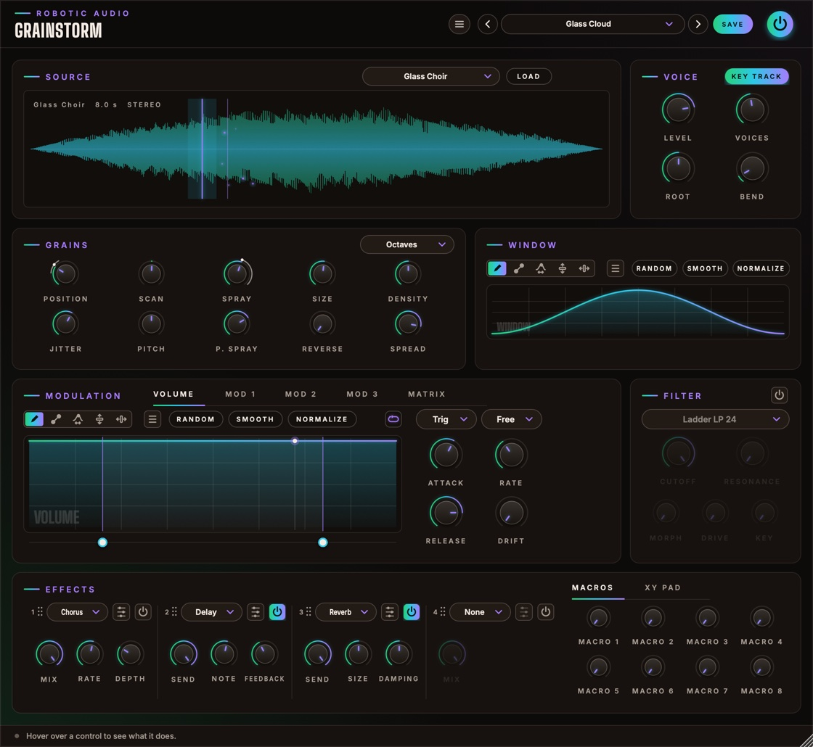

Grainstorm
A polyphonic granular synth. Every note plays a stream of tiny grains read from a sample: frozen in place, scanned along, scattered into clouds, pitched into shimmering chords or turned backwards. Drawn envelopes and a modulation matrix move it all, per voice, and four effect slots finish it.
- Up to 16 voices
- Up to 64 grains per voice
- 5 built-in sources, or your own samples
- Drawn grain window
- 4 drawn envelopes · 8-slot matrix
- 14 filter types
- 4 effect slots · 8 macros · XY pad
- AU · VST3 · Standalone

Quick start
From a sample to a cloud.
Load a preset
Use the arrows or the menu in the header. Glass Cloud, Bell Shimmer and Drone Scanner show what it does. Play a chord.
Pick a sound
Choose a built-in source in the Source card's menu, or drop an audio file onto the waveform. Vocals, field recordings and pads all work well.
Find a spot
Click the waveform to set Position, where the grains come from. Set Scan to 0 % to freeze it there.
Scatter it
Turn up Spray for a cloud, Pitch Spray with Octaves for shimmer, Reverse for backward grains.
Move it
Draw a shape in Mod 1 and route it to Position, Size or Cutoff in the Matrix.
Save
Press SAVE. The preset keeps every knob, every drawing and the sample.
The window
Roughly in the order the sound flows.
- Header
- The preset bar (previous, next, the list, SAVE), the power button (bypass) and the menu (three lines) with this manual. Click the logo for the version and credits. With an AI key, a >_ beside the preset bar opens the designer. Until Grainstorm is licensed, a DEMO or TRIAL chip beside the menu opens the licence.
- Source
- The sample the grains are read from, its menu and LOAD.
- Voice
- Level, Voices, Root, Bend and Key Track.
- Grains
- Ten knobs for where the grains come from and how they play, and the Pitch Spray steps menu.
- Window
- The drawn fade in and out of every grain.
- Modulation
- Tabs for the four drawn envelopes (Volume, Mod 1–3) and the Matrix.
- Filter
- Each voice's filter, with its power button.
- Effects
- Four effect slots and, beside them, the Macros or the XY Pad.
Using the controls
| Do this | To |
|---|---|
| Drag a knob up or down | change it (the value shows while you touch it) |
| Cmd / Ctrl / Alt + drag | fine adjustment |
| Double-click a knob | reset it to its default |
| Right-click an effect control | map it to a macro |
| Drag an effect slot's grip (⠿) | reorder the slots |
A knob that the matrix moves shows a thin ring: the range the modulation can take it over, and a dot where it is now. The window can be made larger: drag its bottom-right corner.
Signal flow
What happens to a note.
Every voice has its own grain stream, its own Volume and Mod 1–3 envelopes, its own matrix (velocity, note and Random are per note) and its own filter, so each note of a chord can move differently. The voices then meet in the effects. A voice that has finished costs nothing.
Source
The sound the grains are made of.
The menu lists the Built-in sources, made by Grainstorm and tuned to C4: Glass Choir, Metal Bells, Breath, Pluck Arp and Drone Sweep. Under Your Samples are the files in your Samples folder (next to Grainstorm's presets), and at the end Show Samples Folder.
LOAD (or dropping a file on the waveform) takes a WAV, AIFF, FLAC, OGG or MP3, up to two minutes, and copies it into your Samples folder, so sessions and presets find it again.
With an AI key, the >_ beside LOAD opens the designer: it can make a new source from a description, and set the patch to match.
- Waveform
- The whole sample, with its name, length and channels. The lit line is Position: click or drag to move it, double-click to reset. The shaded band round it is the Spray. Thin lines show where each voice is reading (Scan moves them on); the sparks are the grains, brighter while louder.
Grains
Where they come from, how long, how many, which pitch, which way.
- Position
- Where in the sample the grains come from (or click the sample). Route an envelope to it in the matrix to sweep it. 0 … 100 %
- Scan
- While a note plays, its position moves on through the sample at this share of the sample's own speed: 100 % plays it along in time, −100 % backwards, 0 % freezes it in place. −200 … +200 %
- Spray
- Scatters each grain's start round the position, up to this much either way in all: a little blurs, a lot turns the sample into a cloud. 0 ms … 2 s
- Size
- How long each grain lasts. Short grains buzz and click (a few ms), long ones play recognisable bits of the sample. 5 ms … 2 s
- Density
- How many grains start each second, per voice. With Size it sets how many overlap; the level adjusts so a dense cloud doesn't get louder. 0.5 … 200 /s
- Jitter
- How irregular the grains' timing is. 0 %: a steady pulse (rhythmic at low density); 100 %: random. 0 … 100 %
- Pitch
- Transposes the grains (on top of the note, with Key Track). ±24 st
- P. Spray
- Pitch Spray: each grain plays up to this many semitones off, at random, in the steps the menu in the card's title sets. 0 … 24 st
- Steps menu
- Pitch Spray Scale: Free (any pitch: a chorus-like smear), Semitones, Fifths (fifths and octaves: shimmer) or Octaves only.
- Reverse
- The chance a grain plays backwards. 100 %: every grain. 0 … 100 %
- Spread
- Scatters the grains across the stereo field. 0 %: all in the middle. 0 … 100 %
Window
How every grain fades in and out.
Drawn left (the grain's start) to right (its end), with the same tools as the envelopes. A smooth hump (Hann) is soft and clean; a fast rise and long fall plucks; a slow rise and sudden end swells into each grain; a flat top with steep sides keeps more of the sample (and clicks). The menu's Windows submenu has the classic ones ready: Hann, Hamming, Blackman, Gauss, Tukey, Kaiser, Expodec, Rexpodec and more. The window is kept in presets.
Voice
How notes play the grains.
- Level
- Each voice's output level. −48 … +6 dB
- Voices
- How many notes can sound at once. A note past that takes over the oldest voice (its grains ring on). 1 … 16
- Root
- The note that plays the sample at its own pitch (with Key Track on). The built-in sources are tuned to C4. C1 … C7
- Bend
- Pitch Bend Range: how far the pitch wheel bends the grains, up and down. 0 … 24 st
- Key Track
- The note sets the grains' pitch, from Root. Off, every note plays the grains at the same pitch: keys then only start and stop voices, handy for drums, textures and drones.
Envelopes
Four drawn shapes per voice.
How loud each note is over time. Always on. It starts as a pad: a slow fade in, a long release.
Free envelopes for the matrix. Mod 1 starts as a slow bipolar sweep wandering the Position.
Mod 1–3 have a power button (off: not calculated) and a Bipolar switch: bipolar, the drawing goes up and down from a centre line and sends −100 to +100 % into the matrix; off, it runs from the bottom, 0 to 100 %.
How an envelope plays
When a note starts, the envelope fades in over Attack and plays the drawing from the left. While you hold the key, the part between the two loop handles (the dots under the drawing) repeats. When you let go it fades out over Release, still following the shape.
- Loop
- The button with the loop picture. Click to step through, right-click to choose: Off (play once, hold the end), Forward, Backward, Palindrome (back and forth).
- Trigger
- Trig: restart on every note. Legato: only after silence. Tempo: never restarts; it follows the song like an LFO and notes only fade it in and out.
- Sync
- Free: speed set by Rate. Note, Dotted, Triplet: Rate becomes a note value, the whole drawing lasting that long at the song's tempo (120 BPM without a host), with a beat grid.
- Rate
- How fast the shape plays (Free), or how long the drawing lasts as a note value (synced; clockwise is faster).
- Attack
- How long a note takes to fade into the envelope. Right-click it to disable it.
- Release
- How long it fades out after the key is let go. Right-click it to disable it: the envelope then holds the value it had when you let go.
- Drift
- A smooth random wobble on the output, never the timing. Right-click to disable.
Drawing & editing
The envelopes and the grain window share the same tools.
- Draw
- Freehand: drag across the shape.
- Line
- Drag a straight line (its ends snap to the grid when synced; hold Cmd for free). Then drag its end dots, or the ring to curve it; Cmd on the ring for an S-curve.
- Warp
- Grab the shape and drag: sideways moves that moment earlier or later, up and down bends the shape around it.
- Lift
- Drag up or down to raise or lower the edit region (or the whole shape).
- Move
- Drag sideways to slide the edit region along; without a region it shifts the whole shape round.
- Random
- A new random shape. The menu has Rhythm, Melody, Organic and Wobble generators.
- Smooth · Normalize
- Soften corners and steps; stretch the shape to the full range.
- Menu (≡)
- Undo and redo, copy and paste, zoom, edits (Smooth, Normalize, Flip, Reverse), random generators, Waveforms, Windows and ready-made shapes by category, Percussion first. Right-click the drawing for the same menu.
Shift-drag marks an edit region that drawing, edits, Random and shapes are limited to; its handles stretch, repeat, scale and tilt what's inside. Cmd+C / Cmd+V copy and paste between any of the drawings, Cmd+Z and Cmd+Shift+Z undo and redo, Cmd+scroll or pinch zooms. Line Runner's manual describes the region handles in full: they work the same here.
Modulation matrix
Eight slots, each voice its own.
Open the Matrix tab. Each slot is one row: Source × Amount (× Via) + Offset → Destination, optionally smoothed. Click a cell for its menu; drag Amount, Offset or Smooth up and down, double-click to reset.
The matrix shows the rows in use and one empty row after them. + ADD ROW adds more, up to eight. Right-click a row to insert a row above it, remove it (the rows below move up) or clear it.
- Source
- Envelopes: Volume, Mod 1–3. MIDI: Velocity, Note, Mod Wheel, Aftertouch, Pitch Bend, CC A, CC B and Random (a new value per note). XY Pad: X and Y. Macros 1–8.
- Via
- A second source that scales the slot. None: always on.
- Destination
- Grains: Position, Scan, Spray, Size, Density, Jitter, Pitch, Pitch Spray, Reverse, Spread. Voice: Level. Filter: Cutoff, Resonance, Morph, Drive. Macros 1–8.
- Amount
- How far, either way: 100 % moves the destination across its whole range. Pitch shows it in semitones (100 % = 48 st). ±100 %
- Offset
- A fixed shift added to the slot, also with no source. ±100 %
- Smooth
- Glides the slot's output over this time. 0 … 2000 ms
CC A and CC B learn from your controller: click Learn under the matrix, then move a knob.
Filter
One per voice, fourteen types.
Switch it on with its power button (Filter On; off, it isn't calculated). Because every voice has its own filter, an envelope on Cutoff sweeps each note.
- Type
- Ladder LP / HP / BP at 24 or 12 dB (Moog-style), SVF Morph and Notch, Diode (303-style), MS-20, Formant, Comb + and −, Phaser.
- Cutoff
- The filter's frequency (a comb's pitch). 20 Hz … 20 kHz
- Resonance
- How much the filter rings at the cutoff. 0 … 100 %
- Morph
- Depends on the type: SVF low → band → high, Formant the vowel, Comb damping. 0 … 100 %
- Drive
- Pushes the grains into the filter: grit and a fatter resonance. 0 … 100 %
- Key
- Filter Key Tracking: how much the cutoff follows the note, from C4. At 100 % an octave per octave. 0 … 100 %
Effects, macros, XY pad
After the voices.
Four slots in series, starting as Chorus, Delay, Reverb and an empty one. Each has a menu (which effect, alphabetically: Chorus, Compressor, Crusher, Delay, Distortion, Drive, EQ, Event Horizon, Filter, Flanger, Freq Shift, Gate, OTT, Overkill, Pan, Phaser, Pitch, Reverb, Reverb 2, Ring Mod, Tape Stop, Width), an edit button that opens the effect's own editor with its live display, a power button, a Mix or Send knob and its two most useful controls. Drag a slot by its number and dots to reorder; its settings come along.
- Macros
- Eight knobs. Right-click any effect control to map it to one, over a range of your choice; route them to and from the matrix; right-click a macro to rename it. All automatable.
- XY Pad
- The second tab beside the effects. Drag the dot to play XY X and XY Y, two bipolar matrix sources; the corners show where they're routed, and the output's recent peaks run behind it. Double-click to centre.
- Spring
- Lit: the dot glides back to the centre when you let go (XY Spring). Off: it stays where you leave it.
Presets
Everything is saved: knobs, drawings, the window, the sample, effects and macros.
| Preset | What it does |
|---|---|
| Default | A gentle cloud of the Glass Choir. |
| Glass Cloud | A slow, wide cloud of the choir, an octave above and below now and then, into a long reverb. The mod wheel scatters it. |
| Bell Shimmer | Bell grains scattered over fifths, a third of them backwards, through delay and reverb. |
| Frozen Breath | The breath held still, a slow drawn sweep through the filter. |
| Stutter Arp | Short grains at a steady pulse, the position stepping through the arpeggio in time with the song. |
| Drone Scanner | Long grains riding along the drone at its own speed, an octave down, smeared wide. |
| Reverse Rain | Every grain backwards, long and sparse, with a window that swells and cuts off. |
| XY Explorer | The XY pad plays the cloud: X moves through the choir, Y scatters the pitch and shortens the grains. |
SAVE stores your sound as a user preset; the menu also has Save As, Delete and Open Folder. A * after the name means you've changed something since loading it. If a preset's sample is missing on another computer, the rest of the preset still loads.
Designing with Claude
Describe a sound; Claude sets Grainstorm to make it.
With your own Anthropic key, the >_ beside the presets opens a designer: describe what you want in your own words, such as "a frozen choir of low male voices, slowly breathing", and Claude sets the grains, pitch, filter and volume, its Volume, Mod 1-3 and grain window shapes, the matrix and the macros, and the four effects with all their settings and macro mappings. It is told what every part does and how it is set now, so it can design from scratch or change only what you ask for.
- Keys
- Menu (three lines) > AI...: an Anthropic key for Claude, and an ElevenLabs key for new samples. They are your own, shared by every Robotic Audio plugin and kept on this computer, never in sessions or presets; each design uses your credits with the service. Without a key nothing of this shows.
- >_
- Left of the preset bar, while a key works: opens the designer over the window. Type a description and press Return (or EXECUTE); ESC closes it, and what is running carries on.
- PATCH
- Claude sets the patch, as a NEW SOUND from your words or EDIT THIS: the patch as it is, changed as you ask ("darker", "slower attack"), keeping the rest.
- SAMPLES
- A new sample too: the source sound the grains are read from (always heard). Claude writes its prompt and ElevenLabs makes it, in up to four TAKES; the first plays as soon as it arrives, the TAKE buttons switch between them, and all are kept with your samples. With PATCH on, a sample is made only if the patch Claude designs plays one (Claude is told whether it does); SAMPLES alone makes one to fit the patch as it is and changes nothing else. With only the ElevenLabs key, your words are the sample's prompt as written.
- REVERT
- Puts the patch back as it was before Claude's last design.
- SAVE AS PRESET
- Keeps the design as one of your presets, named after your words.
- The log
- What Claude made, and what it changed, part by part.
- >_ and AI...
- The designer and its keys: see Designing with Claude.
Recipes
Starting points; then explore.
Load a vocal, Scan 0 %, Size 200 ms, Density 30 /s, Spray 40 ms, Spread 70 %. Click along the waveform to find a vowel that sings.
Scan 25 %, Size 120 ms, Density 40 /s, Jitter 30 %, Spray 0: the sample plays four times slower, at its own pitch.
Pitch Spray 12 st on Octaves, Reverse 20 %, a long Volume release, Reverb 2 at 40 %.
Size 15 ms, Density 8 /s, Jitter 0, Spray 1 s, a Percussion window like Snap: rhythmic shards of the sample.
Matrix: Velocity → Spray +60 %, Velocity → Spread +40 %. Soft notes stay focused, hard ones explode.
Key Track off, Volume with loop Off and a short Percussion shape, Size 60 ms, Density 100 /s.
Licence
Try it, activate it, move it to another computer.
Without a licence, Grainstorm runs as a demo: the sound drops out for 3 seconds every 45 seconds. Everything else works, saving included, so you can try it properly and keep what you made when you buy it. While it isn't licensed, the header shows DEMO (or TRIAL with the days left); click it, or choose Licence... in the menu, for the licence panel. It also opens by itself when the window opens in demo.
- ACTIVATE
- Opens the shop in your browser. Sign in, choose your licence for this computer, and Grainstorm unlocks a few seconds later.
- START TRIAL
- Everything, free, for 14 days, once per computer. The header counts the days down. Activate a licence at any time; your sounds and sessions stay as they are.
- BUY
- The plugin's page on roboticaudio.com, with its Buy button.
- SAVE DEVICE FILE / LOAD LICENCE FILE
- For a computer without the internet. Save the device file, take it to the shop's activation page on a computer that is online, and load the licence file it gives you back.
- DEACTIVATE
- Frees this computer's seat, so you can activate the licence on another one. CHECK NOW confirms the licence with the shop straight away.
Specifications
The numbers.
| Property | Value |
|---|---|
| Polyphony | 1–16 voices; up to 64 grains per voice |
| Samples | 5 built-in sources; WAV, AIFF, FLAC, OGG, MP3 up to two minutes |
| Grains | Size 5 ms – 2 s, Density 0.5–200 /s, Spray up to 2 s, Pitch ±24 st plus Pitch Spray up to 24 st |
| Modulation | 4 drawn envelopes and an 8-slot matrix per voice; 8 macros; XY pad |
| Filter | 14 types, per voice |
| Effects | 4 slots in series, 20 effects |
| CPU | Voices that have finished, and a switched-off filter, cost nothing; effects rest once their tails have died away |
| Formats | AU, VST3, Standalone (with an on-screen keyboard) |
| Licence | Activation in the browser or with a licence file; 14-day trial; a demo without either |